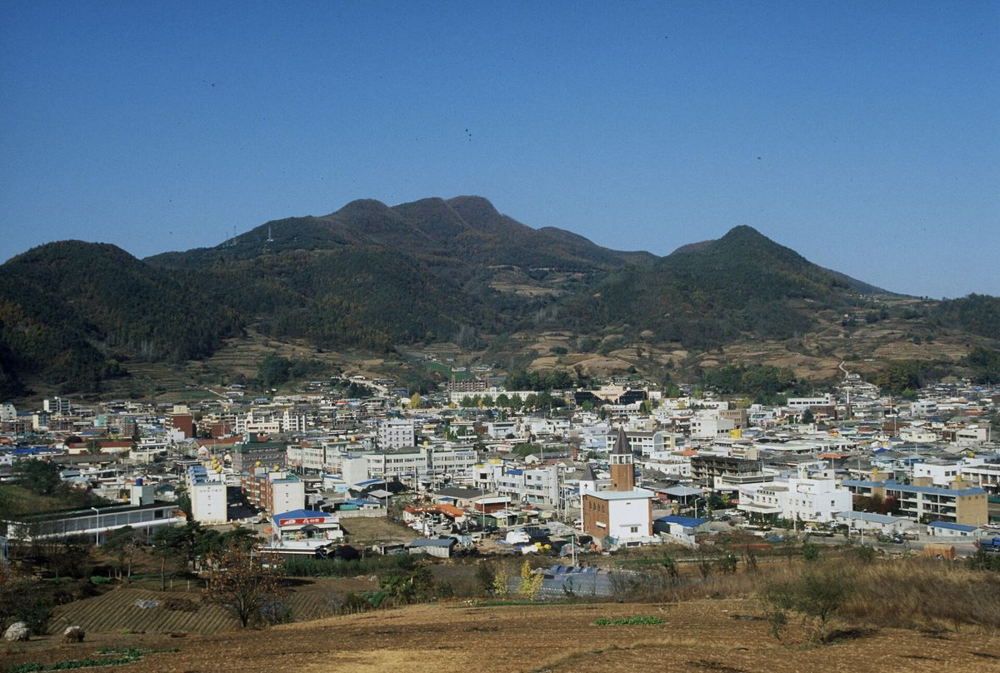

이 대통령 "영양 풍력·햇빛 공유수익, 기본소득 재원으로 쓸 수 있을 것"…영양군, 500억 원 들여 풍력 SPC 지분 10% 갖는 '평생연금' 구상 건의

영양군, 신규·재개발 풍력 55기·347MW 사업에 출자해 20년간 1,241억 원 기대…공공재원 200억 원 융자 등 정부에 건의했지만 답변은 아직 없고, 기대 수익은 검증 전 전망치
이재명 대통령이 10월 31일 농어촌 기본소득 시범지역인 경북 영양군을 찾아 주민 간담회를 열고, 바람에 이어 햇빛을 활용한 재생에너지 사업의 공유 수익을 기본소득 재원으로 "활용할 수 있을 것"이라고 말했다고 김성완 청와대 대변인이 서면브리핑에서 전했다. 사전 예고 없이 이뤄진 이날 방문에서 대통령은 오전에 청송군 진보면 전통시장과 오찬 간담회를, 오후에 영양군 연당1리 이동장터와 마을회관을 찾았으며, 기본소득이 정치적 논쟁거리라 안정성이 부족한 만큼 실효적인 운영으로 안정성을 확보하는 것이 큰 과제라고 했다. 영양군은 같은 날 대통령에게 보고한 자료에서 지역 에너지 수익을 주민에게 돌려주는 '평생연금' 구상을 내놓았는데, 풍력발전기 109기(328MW)가 이미 들어선 군에 신규·재개발 풍력 55기(347MW)를 추진하면서 군이 500억 원을 넣어 민관 공동개발 특수목적법인(SPC) 지분 10%를 확보하면 20년 동안 모두 1,241억 원, 한 해 평균 62억 원 이상을 거둘 것으로 기대했다. 군은 이를 위해 지역개발지원금·지역상생발전기금 등 공공재원 200억 원 융자나 미래대응기금 지원을 정부에 건의했지만 정부가 답을 내놓았다는 소식은 아직 없고, 기대 수익 역시 투자금·금융비용·운영비·배당 구조를 따져 봐야 하는 전망치다. 영양군은 지난해 10월 시범지역으로 지정된 뒤 군비를 보태 주민 1인당 월 20만 원을 지역사랑상품권으로 주고 있으며, 9월 18일 기본사회 조례를 만든 데 이어 11월 10일 기본사회 포럼을 출범시킬 계획이다.
시민에너지 관점
군이 500억 원을 넣어 얻는 몫이 SPC 지분 10%라면, 새 풍력 55기·347MW에서 나올 이익의 90%는 여전히 다른 주주에게 돌아간다. 군 재정 500억 원을 발전 사업에 거는 것이 위험하다는 걱정이 나올 수 있지만, 덴마크가 2009년부터 2020년까지 새 육상풍력 지분의 20% 이상을 주변 주민에게 먼저 내놓도록 했던 것처럼 지분 참여는 제도로 설계할 때 위험과 수익을 함께 나누는 길이 된다. 바람이 주민 모두의 자원이라면 그 이익을 군 금고를 거쳐 나눠 주는 데서 그치지 말고 주민이 직접 출자해 주인이 되는 협동조합 몫까지 열어야 지분 10%가 더 커질 수 있다. 정부는 영양군의 200억 원 건의에 답하면서, 재생에너지 공유수익을 기본소득 재원으로 쓰는 길을 한 군의 구상이 아니라 모든 농어촌이 쓸 수 있는 제도로 만들어야 한다.
출처: 경북도민일보 2026-10-31 이정호 원문 보기
출처: 뉴스신 2026-10-31 남승모 원문 보기
李大統領「英陽の風力・太陽光の共有収益、基本所得の財源に使えるだろう」…英陽郡、500億ウォンを投じ風力SPC持ち分10％を持つ「生涯年金」構想を建議
英陽郡、新規・リパワリング風力55基・347MWの事業に出資し20年間で1,241億ウォンを見込む…公的財源200億ウォンの融資などを政府に建議したが回答はまだなく、期待収益は検証前の見通し
李在明（イ・ジェミョン）大統領は10月31日、農漁村基本所得のモデル地域である慶尚北道英陽（ヨンヤン）郡を訪れて住民懇談会を開き、風に続いて日差しを活用した再生可能エネルギー事業の共有収益を基本所得の財源として「活用できるだろう」と述べたと、金成完（キム・ソンワン）大統領府報道官が書面ブリーフィングで伝えた。事前予告なしに行われたこの日の訪問で、大統領は午前に青松（チョンソン）郡真宝面の在来市場と昼食懇談会を、午後に英陽郡蓮塘1里の移動市場と集会所を訪れ、基本所得は政治的な争点で安定性に欠けるため、実効的な運営で安定性を確保することが大きな課題だと語った。英陽郡は同日、大統領に報告した資料で、地域のエネルギー収益を住民に還元する「生涯年金」構想を示した。すでに風力発電機109基（328MW）が立つ郡で新規・リパワリングの風力55基（347MW）を推進し、郡が500億ウォンを投じて官民共同開発の特別目的会社（SPC）の持ち分10％を確保すれば、20年間で計1,241億ウォン、年平均62億ウォン以上を得られると見込んでいる。郡はそのため、地域開発支援金・地域相生発展基金など公的財源200億ウォンの融資か未来対応基金の支援を政府に建議したが、政府が回答したとの情報はまだなく、期待収益も投資額・金融費用・運営費・配当構造を検証する必要がある見通しにとどまる。英陽郡は昨年10月にモデル地域に指定された後、郡費を上乗せして住民1人当たり月20万ウォンを地域愛商品券で支給しており、9月18日に基本社会条例を制定したのに続き、11月10日に基本社会フォーラムを発足させる計画だ。
市民エネルギーの視点
郡が500億ウォンを投じて得る取り分がSPC持ち分の10％なら、新しい風力55基・347MWから生まれる利益の90％は依然として他の株主に渡る。郡の財政500億ウォンを発電事業に賭けるのは危険だとの懸念も出るだろうが、デンマークが2009年から2020年まで新設陸上風力の持ち分の20％以上をまず周辺住民に提供させたように、持ち分参加は制度として設計すればリスクと収益を分かち合う道になる。風が住民みんなの資源であるなら、その利益を郡の金庫を通して配るだけで終わらせず、住民が直接出資して持ち主になる協同組合の取り分まで開いてこそ、10％の持ち分をさらに大きくできる。政府は英陽郡の200億ウォンの建議に答えるとともに、再生可能エネルギーの共有収益を基本所得の財源に使う道を、一つの郡の構想ではなくすべての農漁村が使える制度にすべきだ。
出典: 慶北道民日報 2026-10-31 イ・ジョンホ 原文を読む
出典: ニュースシン 2026-10-31 ナム・スンモ 原文を読む
李在明总统："英阳的风电和光伏共享收益可用作基本收入财源"…英阳郡建议投入500亿韩元持有风电SPC 10%股份的"终身年金"构想
英阳郡拟出资新建及改造风电55台、347MW项目，预期20年收益1,241亿韩元…已向政府建议200亿韩元公共资金贷款等，但尚无答复，预期收益仍是未经验证的预测
据青瓦台发言人金成完的书面简报，韩国总统李在明10月31日走访农渔村基本收入试点地区庆尚北道英阳郡并与居民座谈，表示继风能之后，利用阳光的可再生能源项目所得共享收益"可以用作"基本收入的财源。在这次事先未公布的访问中，总统上午走访青松郡真宝面传统市场并出席午餐座谈，下午前往英阳郡莲塘1里的流动集市和村会馆，并表示基本收入是政治争议话题、稳定性不足，因此通过务实运营确保稳定是一大课题。英阳郡当天在向总统汇报的资料中提出了把地区能源收益返还居民的"终身年金"构想：郡内已有风力发电机109台（328MW），在此基础上推进新建及改造风电55台（347MW），若郡投入500亿韩元取得官民共同开发特殊目的法人（SPC）10%的股份，预计20年共可获得1,241亿韩元、年均62亿韩元以上的收益。为此，郡向政府建议以地区开发支援金、地区相生发展基金等公共资金提供200亿韩元贷款或以未来应对基金给予支持，但目前尚无政府作出答复的消息，预期收益也仍是需要核实投资额、融资成本、运营费用和分红结构的预测数字。英阳郡去年10月被指定为试点地区后，追加郡财政资金，以地区爱心商品券向每位居民每月发放20万韩元；继9月18日制定基本社会条例后，计划于11月10日成立基本社会论坛。
市民能源视角
如果郡投入500亿韩元换来的只是SPC 10%的股份，那么新建55台、347MW风电产生的利润中仍有90%归其他股东所有。有人会担心把500亿韩元郡财政押在发电项目上风险太大，但正如丹麦在2009年至2020年间要求新建陆上风电项目先向周边居民出让至少20%的股份，只要从制度上加以设计，股权参与就能成为共担风险、共享收益的途径。如果风是全体居民的资源，其收益就不应止于经由郡财政分发，还应向居民直接出资成为主人的合作社开放份额，这样10%的股份才能进一步扩大。政府在答复英阳郡200亿韩元建议的同时，应把用可再生能源共享收益充当基本收入财源的做法，从一个郡的构想变成所有农渔村都能使用的制度。
来源: 庆北道民日报 2026-10-31 Lee Jeong-ho 查看原文
来源: NEWSSHIN 2026-10-31 Nam Seung-mo 查看原文
President Lee says Yeongyang's shared wind and solar revenue "could be used" to fund basic income, as the county proposes a "lifetime pension" built on a 10% stake in a wind SPC bought for 50 billion won
Yeongyang County expects 124.1 billion won over 20 years from investing in 55 new and repowered wind turbines totalling 347MW; it has asked the government for a 20 billion won public-fund loan, but no reply has been reported and the projected returns are unverified estimates
President Lee Jae-myung visited Yeongyang County in North Gyeongsang Province, a pilot area for the rural basic income, on October 31 and told residents at a meeting that shared revenue from renewable energy projects using sunlight as well as wind "could be used" to fund basic income, presidential spokesperson Kim Sung-wan said in a written briefing. On the unannounced trip, the president visited a traditional market in Jinbo-myeon, Cheongsong County, and a lunch meeting in the morning, then a mobile market and the village hall in Yeondang 1-ri, Yeongyang, in the afternoon, saying that because basic income is a political flashpoint and lacks stability, securing stability through effective operation is a major task. In a report to the president the same day, Yeongyang County set out a "lifetime pension" plan to return local energy revenue to residents: in a county that already hosts 109 wind turbines (328MW), it is pursuing 55 new and repowered turbines (347MW), and expects that investing 50 billion won for a 10% stake in a public-private special purpose company (SPC) would bring in 124.1 billion won over 20 years, or more than 6.2 billion won a year on average. The county has asked the government for a 20 billion won loan from public sources such as regional development support funds and regional co-prosperity funds, or support from the Future Response Fund, but no government reply has been reported, and the expected returns remain projections that still need checking against investment, financing costs, operating costs and the dividend structure. Since being designated a pilot area last October, Yeongyang has topped up the payment with county funds to give each resident 200,000 won a month in local gift certificates, and after enacting a basic society ordinance on September 18 it plans to launch a basic society forum on November 10.
Citizen Energy View
If 50 billion won of county money buys only a 10% stake in the SPC, 90% of the profit from the 55 new turbines and 347MW will still go to other shareholders. Some will worry that betting 50 billion won of county finances on a power project is too risky, but just as Denmark required new onshore wind projects from 2009 to 2020 to offer at least 20% of their shares to nearby residents first, a stake designed into the rules becomes a way to share both risk and return. If the wind belongs to all residents, its profits should not simply be handed out through the county treasury; only by also opening a share for cooperatives in which residents invest directly and become owners can that 10% grow larger. In answering Yeongyang's 20 billion won request, the government should turn the use of shared renewable revenue for basic income from one county's plan into a system every rural community can use.
Source: Kyungbuk Domin Ilbo 2026-10-31 Lee Jeong-ho Read the original
Source: NEWSSHIN 2026-10-31 Nam Seung-mo Read the original